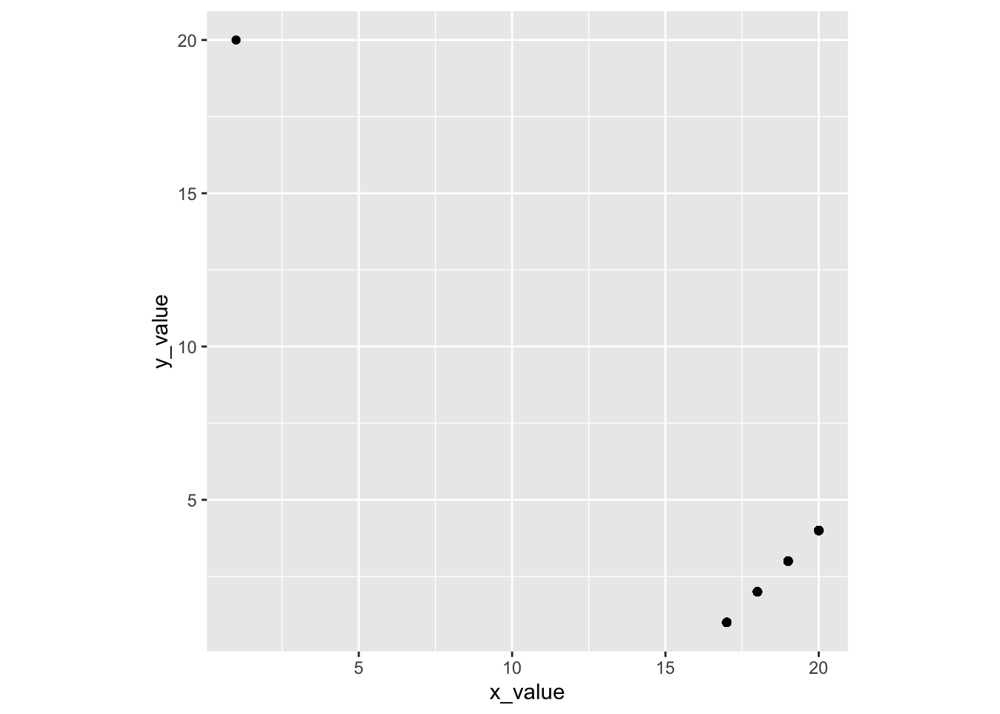

Clicker Q
to go with Introduction to Modern Statistics by Çentinkaya-Rundel & Hardin. Math 58B - Introduction to Biostatistics.
- If 16 infants with no genuine preference choose 16 toys, what is the most likely number of “helping” toys that will be chosen?1
- 4
- 7
- 8
- 9
- 10
- How likely is it that exactly 8 helpers will be chosen (if there is no preference)?2
- 0-15%
- 16-30%
- 31-49%
- 50%
- 51-100%
- What if we flipped a coin 160 times? What percent of the time will the simulation flip exactly 80 heads?3
- 0-15%
- 16-30%
- 31-49%
- 50%
- 51-100%
- Is our actual result of 14 (under the coin model)…4
- very surprising?
- somewhat surprising?
- not very surprising?
- Suppose that we record the midterm exam score and the final exam score for every student in a class. What would the value of the correlation coefficient be if every student in the class scored ten points higher on the final than on the midterm:5
- r = -1
- -1 < r < 0
- r = 0
- 0 < r < 1
- r = 1
- Suppose that we record the midterm exam score and the final exam score for every student in a class. What would the value of the correlation coefficient be if every student in the class scored five points lower on the final than on the midterm:6
- r = -1
- -1 < r < 0
- r = 0
- 0 < r < 1
- r = 1
- Suppose that we record the midterm exam score and the final exam score for every student in a class. What would the value of the correlation coefficient be if every student in the class scored twice as many points on the final than on the midterm:7
- r = -1
- -1 < r < 0
- r = 0
- 0 < r < 1
- r = 1
- Suppose you guessed every value correctly (guess the correlation applet), what would be the value of the correlation coefficient between your guesses and the actual correlations?8
- r = -1
- -1 < r < 0
- r = 0
- 0 < r < 1
- r = 1
- Suppose each of your guesses was too high by 0.2 from the actual value of the correlation coefficient, what would be the value of the correlation coefficient between your guesses and the actual correlations?9
- r = -1
- -1 < r < 0
- r = 0
- 0 < r < 1
- r = 1
- A correlation coefficient equal to 1 indicates that you are a good guesser.10
- TRUE
- FALSE
- Perfect Correlation… if not for a single outlier
n = 101 observations: 1 observation in top left, 25 observations in each in of the points near the bottom right.
The value of the correlation, r, is:11- -1 < r < -.9
- -.9 < r < -.5
- -.5 < r < .5
- .5 < r < .9
- .9 < r < 1